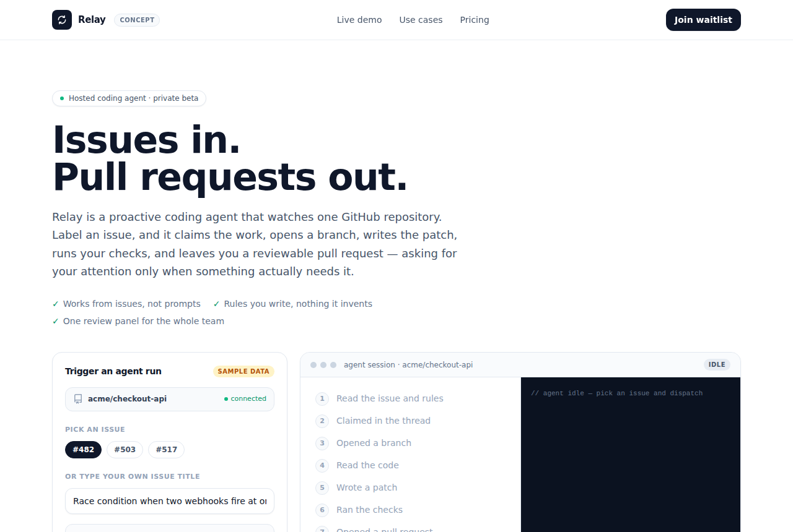

dsh-superagent: A Proactive Coding Agent for GitHub Repos
deepseek-ai/dsh-superagent-prototype · AI appsMIT⭐ 20,702

What it is
dsh-superagent, from deepseek-ai, is a proactive coding agent scoped to a single GitHub repository. It's packaged as a bundle for DeepSeek Harness: it listens to GitHub (and optionally Feishu), and when someone authorized asks for work, it opens a work item, runs it in its own agent session and directory, then replies in the original thread — often with a pull request. A web panel surfaces what still needs a human.
Why it's taking off
The repo has crossed 20k stars in a short window, and the draw is the framing as much as the code. The team's stated principle is "take as little human attention as possible, give as much value as possible" — so the agent acts only when asked or when a team-written rule allows it, and speaks only when someone must act. That's a more disciplined take than the usual "autonomous agent" pitch, and it comes with numbered design docs (philosophy, domain model, authorization, execution, prompts, panel, deployment, architecture).
Where the product opportunity is
The README is blunt: research prototype, not production-ready, may contain bugs, adapted for publication so it differs from the internal version. Setup has many steps and is designed to be done with an agent reading SETUP.md. Dependencies on DeepSeek Harness and Feishu limit international reach.
So the opportunity isn't reselling this. It's the shape: a hosted layer that takes a repo, scopes what the agent may touch, and gives a review queue over its PRs. The authorization model is the interesting part to study.
Today's top 5
| # | Repo | Buzz | Startup | Overall |
|---|---|---|---|---|
| 1 | wheresryan22/anatomy | 8.0 | 6.5 | 7.46 |
| 2 | deepseek-ai/dsh-superagent-prototype | 8.0 | 6.55 | 7.41 |
| 3 | heydamir/unslop | 8.0 | 6.15 | 7.39 |
| 4 | BryceYuuu/RUN | 7.33 | 6.4 | 6.95 |
| 5 | sherlock-project/sherlock | 8.33 | 6.55 | 6.92 |